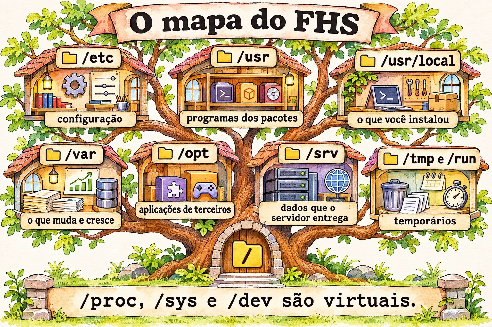
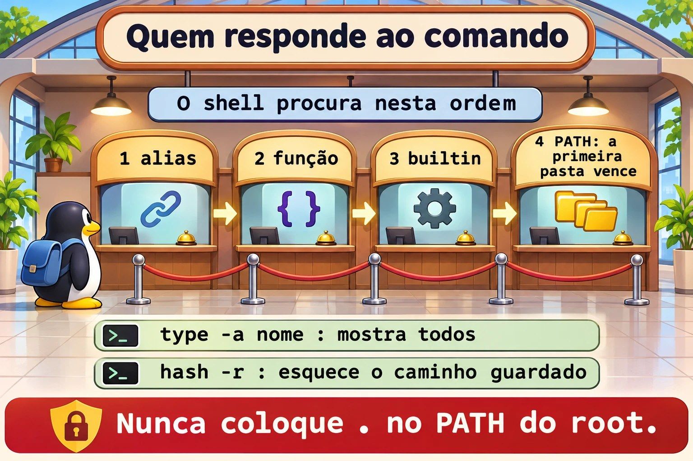

Aula 8.1 · FHS e onde cada coisa mora
Num servidor que você nunca viu, o tempo até a primeira resposta depende de saber onde olhar. O Linux tem um mapa, o FHS, e quem o conhece acha configuração, log e dado sem procurar às cegas. Nesta aula você aprende esse mapa e descobre qual programa roda de verdade quando digita um comando.
Núcleo desta aula: saber o papel de
/etc,/var,/usr,/opt,/srv,/tmpe/run; distinguir o que é disco do que é virtual; decidir onde colocar cada coisa; descobrir o dono de um arquivo; usartype,which,whereiselocatesabendo o que cada um enxerga. O resto é aprofundamento.
| Ficha | |
|---|---|
| Módulo | M8 · Arquivos a fundo, aula 1 de 5 |
| Quando | Semana 12 |
| Ao final | Você chega a um servidor desconhecido e encontra configuração, logs, dados e o dono de cada arquivo |
| Pré-requisitos | Aulas 1.3, 6.1 e 6.2 |
| Tempo | cerca de 1h30 |
| Snapshots | m8a1-inicio e m8a1-fim na rocky-lab e na debian-lab |
1 · Aquecimento
Responda antes de ler.
- Em qual pasta fica a configuração da máquina? E os dados que mudam?
- Um arquivo salvo em
/tmpsobrevive ao reboot? - Se o
whichnão mostra um comando, ele não existe?
2 · Por que importa
| O chamado | A resposta errada | O que ela causa |
|---|---|---|
| "O disco encheu" | Apagar o que parece grande em /usr | Quebra programas. O crescimento normal está em /var |
| "Atualizei e a minha configuração sumiu" | Culpar o pacote | Alguém editou em /usr/lib, que pertence ao pacote. A alteração deveria estar em /etc |
| "O relatório sumiu depois do reboot" | Procurar nos backups | Foi salvo em /tmp, que pode ser memória |
| "Rodei o comando e fez outra coisa" | Reinstalar o pacote | Um alias ou outro programa, antes no PATH, respondeu no lugar |
"O /etc/pve não aparece no backup do disco" | Achar que o disco falhou | É um sistema de arquivos especial do Proxmox, não uma pasta comum |
3 · Modelo mental
O servidor é um prédio com andares de função fixa.
/etcé a sala de normas: poucos papéis, todos importantes./usré o almoxarifado do fabricante, que você não reorganiza./varé o arquivo do dia a dia, que cresce sem parar./tmpé a mesa de rascunho, limpa de vez em quando./opté a sala alugada para terceiros./srvé o depósito do que o prédio entrega a quem vem de fora./proce/syssão os painéis de controle: não guardam nada, só mostram o estado agora.
/ raiz; um único tronco, sem letras de unidade
├─ etc configuração da máquina, em texto
├─ usr programas e bibliotecas do sistema; gerenciado por pacotes
│ ├─ bin, sbin, lib /bin e /sbin hoje são links para cá
│ └─ local o que você instalou à mão
├─ var o que muda: log, spool, cache, lib (bancos, estado)
├─ home, root pastas dos usuários e do root
├─ opt aplicações de terceiros, cada uma na sua pasta
├─ srv dados servidos: site, FTP, repositório
├─ tmp, var/tmp temporários; var/tmp dura mais
├─ run estado desde o boot, em memória
├─ boot kernel, initramfs e GRUB
├─ mnt, media pontos de montagem manuais e removíveis
└─ dev, proc, sys virtuais: dispositivos, processos, kernel

Ponte Windows
| No Windows | No Linux | Onde a comparação engana |
|---|---|---|
C:\, D:\ | Uma única árvore, com discos montados em pastas | Não há letras: um disco inteiro pode ser /var |
C:\Windows\System32 | /usr/bin, /usr/lib | Quem altera são os pacotes, não você |
| Registro, HKLM | /etc | Em texto: dá para versionar, comparar e copiar |
C:\Program Files | /usr, /opt, /usr/local | O pacote espalha os arquivos por função, e não numa pasta por programa |
C:\ProgramData | /var/lib, /etc | Configuração e estado ficam separados |
| Visualizador de Eventos | /var/log, journal | Muitos logs são texto simples |
%TEMP% | /tmp, /var/tmp | Compartilhado por todos, com sticky bit |
| Índice do Windows Search | locate | Só atualiza quando o updatedb roda |
4 · O essencial
Onde colocar
| O que é | Onde vai |
|---|---|
| Configuração da máquina | /etc |
| Programa instalado à mão, simples | /usr/local |
| Aplicação de terceiro, numa pasta só | /opt/NOME |
| Dados que um serviço entrega | /srv/NOME ou o padrão do serviço, como /var/www |
| Estado e bancos de dados | /var/lib/NOME |
| Logs | /var/log/NOME |
| Temporário que pode sumir | /tmp |
| Temporário que precisa aguentar reboot | /var/tmp |
Quem é este comando
| Quero... | Comando | Enxerga |
|---|---|---|
| Saber o que o shell vai executar | type -a nome | Alias, função, builtin e PATH |
| Só o caminho, para script | command -v nome | Também alias e builtin |
| Procurar no PATH | which nome | Só programas no PATH |
| Binário, fonte e manual | whereis nome | Pastas padrão, sem olhar o PATH |
| Procurar por nome no disco | locate texto | O banco do último updatedb |
De quem é este arquivo
| Quero... | Rocky | Debian |
|---|---|---|
| Pacote dono do arquivo | rpm -qf ARQUIVO | dpkg -S ARQUIVO |
| O que mudou desde a instalação | rpm -V PACOTE | dpkg -V PACOTE |
Se nenhum pacote é dono, alguém colocou o arquivo ali: um instalador, um script ou uma pessoa.
Temporários
O systemd-tmpfiles limpa /tmp e /var/tmp por idade, em geral 10 e 30 dias. Confira com systemd-tmpfiles --cat-config | grep -E ' /(var/)?tmp '. Em /run, tudo some no desligamento.
Rocky × Debian
| Rocky | Debian | |
|---|---|---|
/tmp numa instalação nova | Em disco | Em memória (tmpfs), a partir do Debian 13 |
| Ajustes de serviços | /etc/sysconfig | /etc/default |
| Log geral em texto | /var/log/messages | Só journal, se o rsyslog não estiver instalado |
| Autenticação em texto | /var/log/secure | /var/log/auth.log, com rsyslog |
| Apache | /etc/httpd | /etc/apache2 |
locate | Pacote mlocate | Pacote plocate |
Comece sempre com findmnt /tmp, em vez de presumir.
5 · Lab guiado
Passo 0 · Snapshots e preparo. No Proxmox: qm snapshot 201 m8a1-inicio e qm snapshot 202 m8a1-inicio. Na rocky-lab:
sudo dnf install -y mlocate which
mkdir -p ~/lab81 && cd ~/lab81Passo 1 · Andar pelo mapa.
ls /
ls -ld /bin /sbin /lib
findmnt -no SOURCE,FSTYPE /
findmnt /tmp
findmnt -t proc,sysfs,tmpfs/bin é um link para usr/bin. Os sistemas atuais juntaram essas pastas. O findmnt separa o que é disco do que é virtual.
Passo 2 · Quem é dono e quem cresce.
rpm -qf /etc/ssh/sshd_config /usr/sbin/sshd
rpm -qf ~/.bashrc
sudo rpm -V openssh-server
sudo du -xh --max-depth=1 /var | sort -hO ~/.bashrc não tem dono: foi copiado na criação do usuário. O -x do du não atravessa para outros sistemas de arquivos, o que faz a soma valer para aquele disco.
Passo 3 · Quem manda na configuração.
systemctl cat sshd | head -n 3
ls /etc/systemd/system | head
ls /usr/lib/systemd/system | wc -lO pacote entrega em /usr/lib. O seu ajuste vai em /etc, que tem precedência. Numa atualização, o pacote substitui o que é dele, e não o que é seu.


Passo 4 · Quem responde a um comando.
type -a ls
type cd
which ls
which cd
whereis ls
command -v lsO type -a ls mostra o alias e depois o programa. O type cd responde builtin. O which cd falha ou aponta para algo que não é o que o shell usa. Para saber o que vai rodar, o certo é type.
Passo 5 · Procurar com índice.
touch ~/lab81/agulha-no-palheiro.txt
locate agulha-no-palheiro
sudo updatedb
locate agulha-no-palheiro
rm ~/lab81/agulha-no-palheiro.txt
locate agulha-no-palheiro
locate -e agulha-no-palheiroSe o primeiro locate reclamar que não acha o banco (mlocate.db ou plocate.db), é só porque o updatedb ainda não rodou nesta máquina. O arquivo novo só aparece depois do updatedb. Depois de apagado, ele continua na lista até o próximo updatedb, e o -e confere se ainda existe.
Passo 6 · O virtual.
cat /proc/uptime
cat /proc/sys/vm/swappiness
ls -l /proc/self
df -h /run /dev/shmNada disso ocupa disco. O /proc/self aponta para o próprio processo que o lê.
Passo 7 · debian-lab.
sudo apt install -y plocate
findmnt /tmp
ls -ld /etc/default /etc/sysconfig
ls /var/log | head -n 20
dpkg -S /usr/sbin/sshd
systemctl cat ssh | head -n 3Decida 1
Um fornecedor entrega um .tar.gz com programa, bibliotecas e tudo mais em uma pasta. Onde instalar?
A) Em /usr/bin, para já ficar no PATH. B) Em /opt/fornecedor, com um link em /usr/local/bin para o executável. C) Em /root.
Marque uma opção antes.
| Se você marcou | Resultado | Por quê |
|---|---|---|
| A | Risco | Mistura arquivos sem dono na área dos pacotes |
| B | Certo | Fica isolado, fácil de remover, e o comando continua no PATH |
| C | Ruim | Outros usuários e serviços não acessam, e o backup nem sempre inclui |
Para fixar: /usr é dos pacotes. O que você traz vai para /opt ou /usr/local.
Decida 2
Um script gera um arquivo intermediário de 5 GB, e a tarefa precisa sobreviver a um reboot. A VM é Debian 13, com 2 GB de RAM. Onde gravar?
A) /tmp. B) /var/tmp. C) /dev/shm.
Marque uma opção antes.
| Se você marcou | Resultado | Por quê |
|---|---|---|
| A | Falha | /tmp é memória aqui: não cabe e some no reboot |
| B | Certo | Fica em disco e dura mais |
| C | Pior | Sempre memória |
Para fixar: confira com findmnt o que está por trás da pasta.
6 · Quebre e conserte
Quebra 1 · O comando impostor
mkdir -p ~/lab81/bin
printf '#!/bin/bash\necho "eu nao sou o ls"\n' > ~/lab81/bin/ls
chmod +x ~/lab81/bin/ls
PATH=$HOME/lab81/bin:$PATH
hash -r
ls /etcSintoma: o ls responde outra coisa.
Diagnóstico: type -a ls mostra todos os candidatos, na ordem. O primeiro no PATH vence.
Conserto:
PATH=${PATH#$HOME/lab81/bin:}
hash -r
type -a lsNa vida real: por isso nunca se coloca . no PATH do root. O hash -r limpa a memória do shell sobre onde cada comando estava.

Quebra 2 · O disco que encheu
sudo dd if=/dev/zero of=/var/log/lab81-grande.log bs=1M count=200 status=none
df -h /varSintoma: o uso subiu e ninguém diz por quê.
Diagnóstico: vá descendo, uma pasta de cada vez.
sudo du -xh --max-depth=1 /var | sort -h | tail -n 4
sudo du -xh --max-depth=1 /var/log | sort -h | tail -n 4Conserto: sudo rm /var/log/lab81-grande.log. Em produção, confirme antes de quem é o arquivo e se há processo escrevendo nele, como visto na aula 1.4.
Quebra 3 · O arquivo que sumiu (debian-lab)
findmnt /tmp
echo importante > /tmp/lab81.txt
sudo rebootReconecte e rode cat /tmp/lab81.txt.
Sintoma: No such file or directory.
Diagnóstico: se o findmnt /tmp mostrou tmpfs, o conteúdo estava em memória.
Conserto: o que precisa durar vai para /var/tmp ou para uma pasta de dados. Repita na rocky-lab e compare o resultado.
Limpeza
rm -r ~/lab817 · Armadilhas
| Armadilha | O que acontece | Como evitar |
|---|---|---|
Editar arquivo em /usr/lib | A próxima atualização desfaz | Use /etc e systemctl edit |
Apagar o que está em /var/lib para ganhar espaço | Destrói banco e estado | Limpe /var/log e /var/cache com critério |
Confiar no which | Não vê alias nem builtin | Use type -a |
Esperar arquivo novo no locate | Não aparece até o updatedb | sudo updatedb ou find |
Fazer backup de /proc e /sys | Erros e tamanhos sem sentido | Exclua os virtuais ou use -xdev |
Presumir que /tmp é disco | Enche a memória ou perde dados | findmnt /tmp |
du sem -x | Soma também outros discos montados | du -x |
Backup só de /home | Faltam /etc e /var/lib | Liste o que é configuração e o que é dado |
8 · Quiz
Responda sem olhar. O gabarito está no fim da aula.
- Qual a diferença entre
/usr/locale/opt? - Onde cresce o que costuma encher o disco?
- Como descobrir o pacote dono de
/usr/sbin/sshdem cada família? - Por que
typeé melhor quewhichpara saber o que vai rodar? - Por que
/procnão ocupa espaço? - Por que
/var/tmppode ser melhor que/tmp?
9 · Cola
Para saber de cor:
| Quero... | Comando |
|---|---|
| Ver o que está montado em uma pasta | findmnt /tmp |
| Saber quem responde | type -a nome |
| Dono na Rocky | rpm -qf ARQUIVO |
| Dono no Debian | dpkg -S ARQUIVO |
| Quem ocupa espaço | sudo du -xh --max-depth=1 /var | sort -h |
| Atualizar o índice | sudo updatedb |
Para consultar:
| Quero... | Comando |
|---|---|
| Manual do mapa | man hier, man file-hierarchy |
| Procurar no índice | locate texto, locate -e texto |
| Conferir alterações em um pacote | rpm -V PACOTE, dpkg -V PACOTE |
| Regras de limpeza | systemd-tmpfiles --cat-config |
| Binário e manual | whereis nome |
Flashcards:
/etc→ configuração./var→ o que muda e cresce./usr→ dos pacotes./opt→ terceiros, uma pasta por aplicação./run→ estado em memória, desde o boot.- Quem roda? →
type -a.
10 · Checklist e fechamento
- [ ] Digo o papel de cada pasta principal
- [ ] Distingo disco de memória e de sistema virtual
- [ ] Decido onde instalar e onde gravar
- [ ] Acho o pacote dono de um arquivo nas duas famílias
- [ ] Uso
type,which,whereiselocatesabendo o que cada um vê - [ ] Desço pelo
duaté achar o que encheu
Último exercício, sem olhar a aula: na debian-lab, descubra o arquivo de configuração principal do SSH, o pacote dono dele, o executável do serviço e onde ficam os logs de acesso.
Snapshot de fim (no Proxmox):
qm snapshot 201 m8a1-fim
qm snapshot 202 m8a1-fim11 · Na vida real
Missão, só leitura. Num servidor Linux que você administre (ou com autorização), rode apenas:
findmnt -t xfs,ext4,zfs,nfs,nfs4
findmnt /tmp
df -h
sudo du -xh --max-depth=1 /var | sort -h | tail -n 5
ls /opt /srv /usr/local/binPerguntas para responder:
- O que é disco separado e o que divide a raiz?
- Qual pasta mais ocupa
/var? - O que existe em
/opte em/usr/local/bin? Tem dono de pacote? - Num Proxmox, o que
findmnt /etc/pvemostra?
Diário: anote o que você colocaria num backup dessa máquina, além de /home.
Amanhã, sem olhar: desenhe a árvore da raiz, com uma frase para cada pasta.
12 · Aprofundar quando quiser
man hiereman file-hierarchy: o mapa na descrição oficial./etc/updatedb.conf: o que o índice ignora.etckeeper: versionar o/etccom git.tmpfiles.d: criar as suas regras de limpeza./etc/pve: o sistema de arquivos em cluster do Proxmox, que você verá no M17.
DeepTutor (http://10.1.0.149:3782, KB "Curso Linux Sysadmin"):
!explica a diferença entre /usr/local, /opt e /srv!feynman por que /proc não ocupa espaço em disco!quiz Aula 8.1, 5 perguntas sobre o FHS
Gabarito comentado
Aquecimento
- Em
/etca configuração, e em/varos dados que mudam. - Depende. Em disco, pode sobreviver até a limpeza por idade. Em tmpfs, some.
- Não. Pode ser builtin, alias ou função, ou estar fora do PATH.
Quiz
/usr/localsegue a estrutura do sistema (bin,lib) e recebe coisas pequenas instaladas à mão./optguarda cada aplicação em sua própria pasta.- Em
/var, sobretudo/var/log,/var/libe/var/cache. rpm -qf /usr/sbin/sshdedpkg -S /usr/sbin/sshd.- Porque o
typeé parte do shell e enxerga alias, função e builtin, que são considerados antes do PATH. - Porque é gerado na hora pelo kernel e não existe em disco.
- Porque costuma ficar em disco, não é limpo no reboot e tem prazo maior.